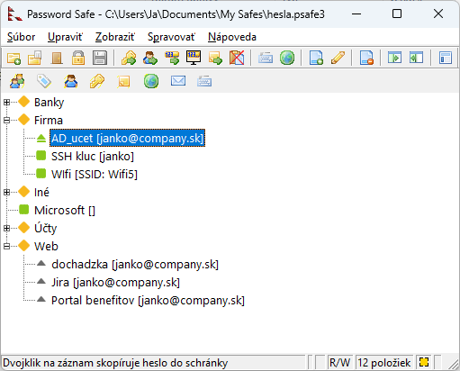
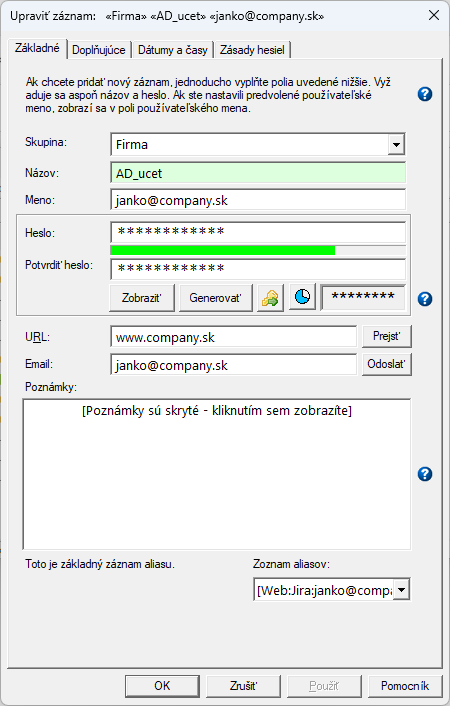
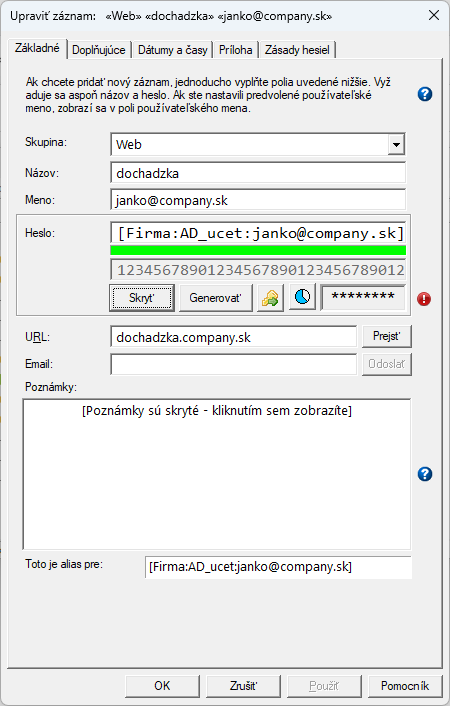
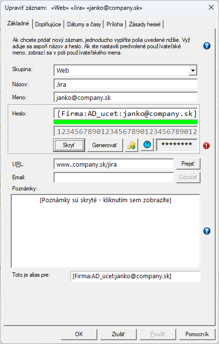
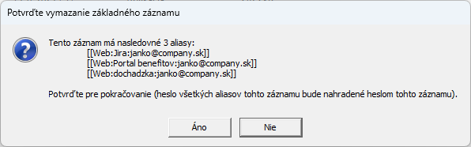

V prípade že využívate infraštruktúru "jednotného prihlásenia" Single Sign-On, tak používate jednotné prihlasovacie údaje
na rôzne servery/aplikácie/weby ktoré sú navzájom prepojené centrálnou autentifikáciou.
Password Safe vám v tomto prípade vychádza v ústrety vďaka možnosti použiť aliasy.
Základnou myšlienkou je umožniť odkazovanie sa na heslo jedného záznamu inému záznamu.
"Odkazovaný" záznam sa nazýva základný a "odkazujúci" záznam (alebo záznamy) sa nazýva alias(y).
Keď je záznam nastavený ako alias iného záznamu, heslo aliasu efektívne "nasleduje" heslo tohto záznamu:
Ak skopírujete heslo aliasu do schránky, skopírované heslo je heslo základného záznamu.
Ak zmeníte heslo základného záznamu, okamžite sa to prejaví vo všetkých aliasových záznamoch spojených s týmto záznamom.
Aj keď to môže znieť komplikovane, v skutočnosti to uľahčuje správu viacerých záznamov ktoré zdieľajú rovnaké heslo.
Napríklad máte pracovné konto a pravidelne musíte meniť jeho heslo, používateľské meno a heslo tohto konta zároveň používate ako prihlasovacie údaje
pre rôzne aplikácie a webové stránky (a máte pre ne vytvorené zodpovedajúce záznamy v Password Safe).
Ak zmeníte toto heslo, nemusíte ho meniť vo všetkých záznamoch, ale len v zázname ktorý zodpovedá pracovnému kontu.
V Password Safe sa záznam môže odkazovať na heslo iného záznamu pomocou špeciálne formátovaného hesla v odkazujúcom zázname, teda nie samotnou hodnotou hesla. Formát je "názov" odkazovaného záznamu uzavretý v hranatých zátvorkách. Väčšinou si môžete "názov" predstaviť ako synonymum poľa s názvom záznamu, takže ak je napríklad názov základného záznamu "master", potom stačí zadať "[master]" (bez úvodzoviek) ako heslo iného záznamu, aby sa tento iný záznam definoval ako alias pre "master".
Vo všeobecnosti môže "[názov]" obsahovať všetky nasledujúce polia, oddelené dvojbodkami: Skupina, Názov a Používateľské meno (nar. [skup1:zaznam1:meno1]). Upozorňujeme, že ak je Názov v databáze jedinečný, ostatné polia sú voliteľné. Podobne, ak Skupina a Názov spolu resp. Názov a Používateľské meno spolu určujú jedinečný záznam, potom nie je potrebné zadať zodpovedajúce používateľské meno resp. skupinu.
V záznamoch Password Safe sú povinné iba polia Názov a Heslo. Polia Skupina a Meno používateľa sú voliteľné, pokiaľ je výsledná kombinácia "Skupina/Názov/Meno" jedinečná. Ako je uvedené vyššie, "heslo" aliasu má tvar [g:t:u], ale v skutočnosti stačí zadať iba dostatok informácií na jednoznačnú identifikáciu základného záznamu. Ak je teda v databáze iba jeden záznam s názvom 't', potom by stačilo použiť [t] – keďže názov je povinný a je uvedená iba jedna položka, predpokladá sa, že ide o Názov. Ak by s týmto názvom existovalo viacero záznamov, boli by ste na to upozornení a museli by ste byť konkrétnejší, aby ste jednoznačne identifikovali základný záznam pridaním buď jeho skupiny, mena alebo oboch. Pokiaľ existuje zodpovedajúci jedinečný záznam, akceptuje sa ktorýkoľvek z nasledujúcich formátov: [g:t:u], [g:t], [t:u] alebo [t]. Zadanie dvojbodky bez hodnoty znamená prázdne pole, napr. [g:t:] znamená záznam s názvom 't' v skupine 'g' a bez hodnoty mena a [:t:] určuje záznam s názvom 't' v koreňovom adresári bez hodnoty mena používateľa atď.
Ak zmeníte heslo aliasu, zmena sa prejaví až po kliknutí na tlačidlo Použiť alebo OK. Ak však chcete zmeniť heslo základného záznamu, musíte upraviť priamo základný záznam. Ak zmeníte heslo aliasu z [g:t:u] na inú hodnotu, ktorá nie je v tomto formáte, záznam sa zmení z aliasu na "normálny" záznam a nebude mať žiadnu súvislosť s predchádzajúcim základným záznamom. Samozrejme, prepojenie môžete obnoviť pomocou funkcie "Vrátiť späť" alebo manuálnou úpravou hesla späť na [g:t:u].
Na rozdiel od odkazov, ktoré odkazujú na základný záznam pre všetky polia, aliasy majú svoje vlastné hodnoty pre všetky polia okrem svojho hesla, ktoré je vždy heslom ich základného záznamu. Napríklad: kopírovanie adresy URL aliasu použije hodnotu aliasu, ale kopírovanie hesla aliasu skopíruje heslo jeho základného záznamu.
Nakoniec, ak si normálny záznam ukladal históriu hesiel predtým, ako sa z neho stal alias zmenou hesla ako je popísané vyššie, potom si túto históriu zachová. Ak sa alias neskôr vráti späť k normálnemu záznamu, táto história hesiel sa opäť stane aktívnou a aktualizuje sa, ak sa zmení jeho vlastné heslo.
Základné záznamy, teda záznamy s aspoň jedným aliasom, ktorý na ne "odkazuje", sa zobrazujú so zeleným trojuholníkom namiesto zeleného štvorca vo vnorenom stromovom zobrazení. Položky aliasov sa zobrazujú so sivými trojuholníkmi.
Máme firemný účet s názvom "AD_ucet", vytvoríme na neho niekoľko aliasov ktoré používame na prístup na webové stránky. Tieto aliasy fungujú ako bežné záznamy ale zdieľajú jedno heslo. Každý alias má rovnaké používateľské meno ale inú URL adresu.

  
V prípade vymazania základného záznamu budete vyzvaní na potvrdenie, keďže táto akcia bude mať za následok, že aliasy stratia prepojenie na tento záznam. Tým pádom sa heslo každého aliasu nahradí "doslovnou" hodnotou hesla základného záznamu.
